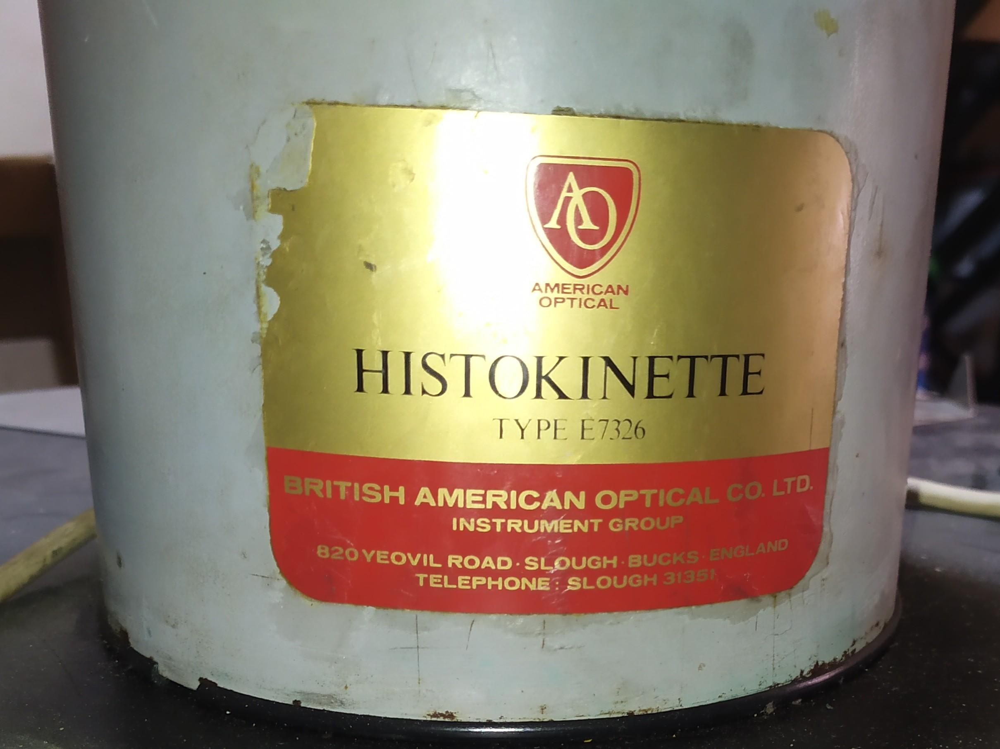

″Programming is like poetry. Style can be imitated; mastery cannot.‶

Python, C++, Dart, Java
SQL, NoSQL, PostgreSQL, MySQL/MariaDB, MongoDB
FastAPI, Arduino, Django
IoT, I2C, Finite-State Machines, Watchdog
Docker, Docker-Compose, Make, Github Actions
Domain Driven Desigin, Onion Architecture, Unit of Work
English C1, Arabic, Russian, Ukrainian